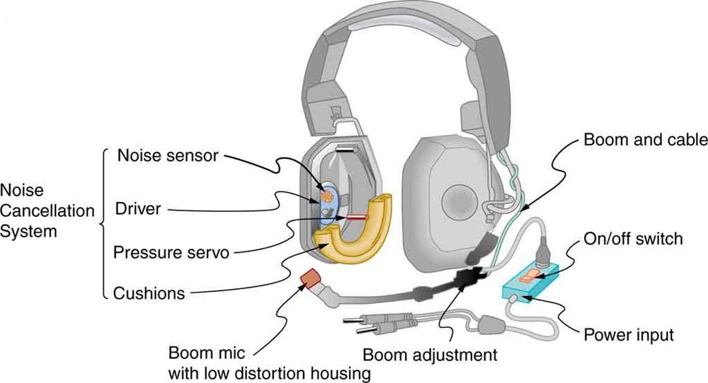
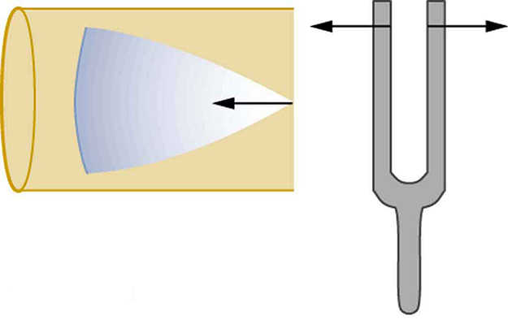
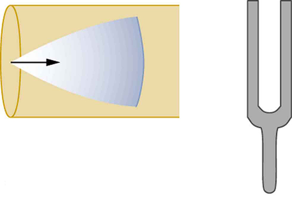
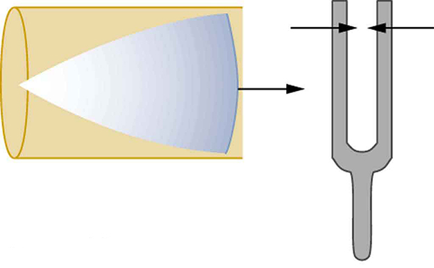
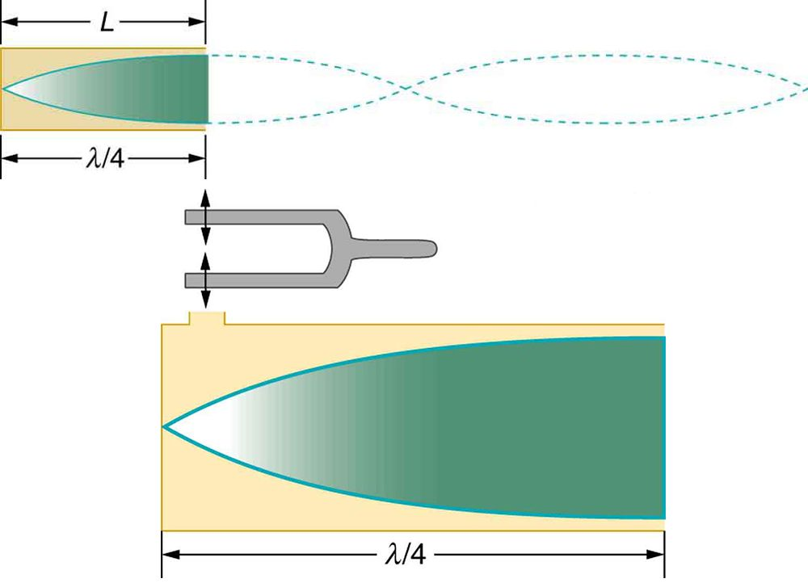
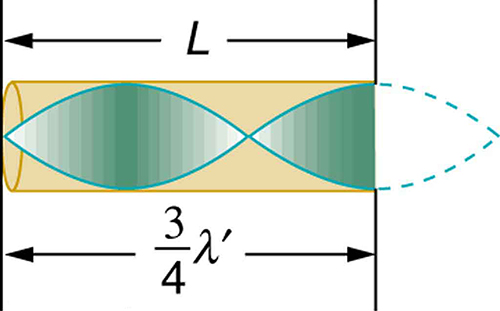
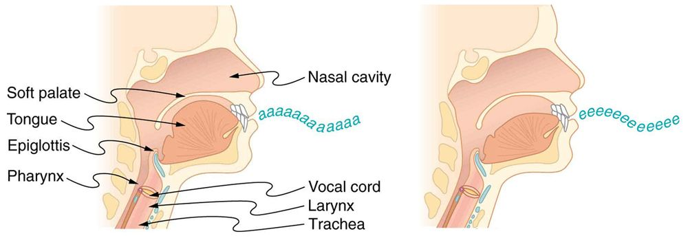
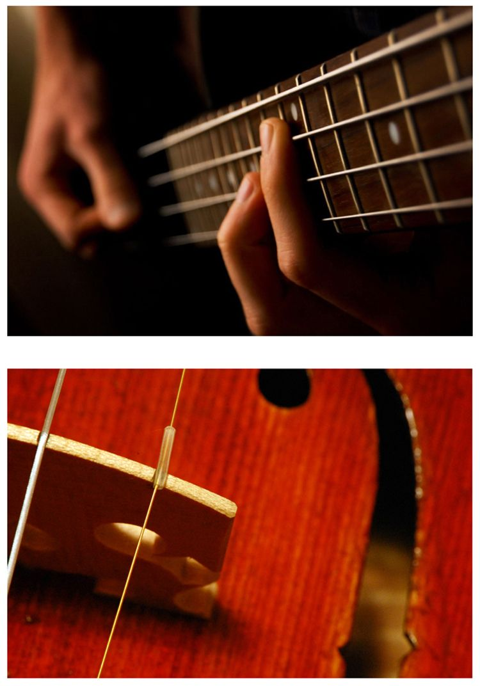

![There are four tubes, each of which is closed at one end. Each tube has resonance waves reflected at the closed end. In the first tube, marked Fundamental, the wavelength is long and only one-fourth of the wave is inside the tube, with the maximum air displacement at the open end. In the second tube, marked First overtone, the wavelength is slightly shorter and three-fourths of the wave is inside the tube, with the maximum air displacement at the open end. In the third tube, marked Second overtone, the wavelength is still shorter and one and one-fourth of the wave is inside the tube, with the maximum air displacement at the open end. In the fourth tube, marked Third overtone, the wavelength is shorter than the others, and one and three-fourths of the wave is inside the tube, with the maximum air displacement at the open end.](CNX_HSPhysics_14_04_ClosedOver.jpg)
The original, as published: OpenStax, College Physics 2e, Urone, Hinrichs, section 17.5 Sound Interference and Resonance: Standing Waves in Air Columns. © Rice University. CC BY-NC-SA 4.0, https://creativecommons.org/licenses/by-nc-sa/4.0/. Imported as published, from https://openstax.org/books/college-physics-2e/pages/17-5-sound-interference-and-resonance-standing-waves-in-air-columns
By the end of this section, you will be able to:
Interference is the hallmark of waves, all of which exhibit constructive and destructive interference exactly analogous to that seen for water waves. In fact, one way to prove something “is a wave” is to observe interference effects. So, sound being a wave, we expect it to exhibit interference; we have already mentioned a few such effects, such as the beats from two similar notes played simultaneously.
the figure shows a clever use of sound interference to cancel noise. Larger-scale applications of active noise reduction by destructive interference are contemplated for entire passenger compartments in commercial aircraft. To obtain destructive interference, a fast electronic analysis is performed, and a second sound is introduced with its maxima and minima exactly reversed from the incoming noise. Sound waves in fluids are pressure waves and consistent with Pascal’s principle; pressures from two different sources add and subtract like simple numbers; that is, positive and negative gauge pressures add to a much smaller pressure, producing a lower-intensity sound. Although completely destructive interference is possible only under the simplest conditions, it is possible to reduce noise levels by 30 dB or more using this technique.

Where else can we observe sound interference? All sound resonances, such as in musical instruments, are due to constructive and destructive interference. Only the resonant frequencies interfere constructively to form standing waves, while others interfere destructively and are absent. From the toot made by blowing over a bottle, to the characteristic flavor of a violin’s sounding box, to the recognizability of a great singer’s voice, resonance and standing waves play a vital role.
Interference is such a fundamental aspect of waves that observing interference is proof that something is a wave. The wave nature of light was established by experiments showing interference. Similarly, when electrons scattered from crystals exhibited interference, their wave nature was confirmed to be exactly as predicted by symmetry with certain wave characteristics of light.
Suppose we hold a tuning fork near the end of a tube that is closed at the other end, as shown in the figure, the figure, the figure, and the figure. If the tuning fork has just the right frequency, the air column in the tube resonates loudly, but at most frequencies it vibrates very little. This observation just means that the air column has only certain natural frequencies. The figures show how a resonance at the lowest of these natural frequencies is formed. A disturbance travels down the tube at the speed of sound and bounces off the closed end. If the tube is just the right length, the reflected sound arrives back at the tuning fork exactly half a cycle later, and it interferes constructively with the continuing sound produced by the tuning fork. The incoming and reflected sounds form a standing wave in the tube as shown.



The standing wave formed in the tube has its maximum air displacement (an antinode) at the open end, where motion is unconstrained, and no displacement (a node) at the closed end, where air movement is halted. The distance from a node to an antinode is one-fourth of a wavelength, and this equals the length of the tube; thus, . This same resonance can be produced by a vibration introduced at or near the closed end of the tube, as shown in the figure. It is best to consider this a natural vibration of the air column independently of how it is induced.

Given that maximum air displacements are possible at the open end and none at the closed end, there are other, shorter wavelengths that can resonate in the tube, such as the one shown in the figure. Here the standing wave has three-fourths of its wavelength in the tube, or , so that . Continuing this process reveals a whole series of shorter-wavelength and higher-frequency sounds that resonate in the tube. We use specific terms for the resonances in any system. The lowest resonant frequency is called the fundamental, while all higher resonant frequencies are called overtones. All resonant frequencies are integral multiples of the fundamental, and they are collectively called harmonics. The fundamental is the first harmonic, the first overtone is the second harmonic, and so on. the figure shows the fundamental and the first three overtones (the first four harmonics) in a tube closed at one end.

The fundamental and overtones can be present simultaneously in a variety of combinations. For example, middle C on a trumpet has a sound distinctively different from middle C on a clarinet, both instruments being modified versions of a tube closed at one end. The fundamental frequency is the same (and usually the most intense), but the overtones and their mix of intensities are different and subject to shading by the musician. This mix is what gives various musical instruments (and human voices) their distinctive characteristics, whether they have air columns, strings, sounding boxes, or drumheads. In fact, much of our speech is determined by shaping the cavity formed by the throat and mouth and positioning the tongue to adjust the fundamental and combination of overtones. Simple resonant cavities can be made to resonate with the sound of the vowels, for example. (See the figure.) In males, at puberty, the larynx grows and the shape of the resonant cavity changes giving rise to the difference in predominant frequencies in speech between different sexes.

Now let us look for a pattern in the resonant frequencies for a simple tube that is closed at one end. The fundamental has , and frequency is related to wavelength and the speed of sound as given by:
Solving for in this equation gives
where is the speed of sound in air. Similarly, the first overtone has (see the figure), so that
Because , we call the first overtone the third harmonic. Continuing this process, we see a pattern that can be generalized in a single expression. The resonant frequencies of a tube closed at one end are
where is the fundamental, is the first overtone, and so on. It is interesting that the resonant frequencies depend on the speed of sound and, hence, on temperature. This dependence is the reason why musicians commonly bring their wind instruments to room temperature before playing them together with other types of instruments.
(a) What length should a tube closed at one end have on a day when the air temperature, is , if its fundamental frequency is to be 128 Hz (C below middle C)?
(b) What is the frequency of its fourth overtone?
The length can be found from the relationship in , but we will first need to find the speed of sound .
(1) Identify knowns:
(2) Use to find the fundamental frequency ().
(3) Solve this equation for length.
(4) Find the speed of sound using .
(5) Enter the values of the speed of sound and frequency into the expression for .
Many wind instruments are modified tubes that have finger holes, valves, and other devices for changing the length of the resonating air column and hence, the frequency of the note played. Horns producing very low frequencies, such as tubas, require tubes so long that they are coiled into loops.
(1) Identify knowns:
(2) Enter the value for the fourth overtone into .
Whether this overtone occurs in a simple tube or a musical instrument depends on how it is stimulated to vibrate and the details of its shape. The trombone, for example, is usually not played to produce its fundamental frequency and typically only the overtones are used.
Another type of tube is one that is open at both ends. Examples are some organ pipes, flutes, and oboes. The resonances of tubes open at both ends can be analyzed in a very similar fashion to those for tubes closed at one end. The air columns in tubes open at both ends have maximum air displacements at both ends, as illustrated in the figure. Standing waves form as shown.
![The resonant frequency waves in a tube open at both ends are shown. There are a set of four images. The first image shows a tube of length L marked fundamental having half a wave. The maxima of the vibrations are on both the open ends of the tube. The second image shows a tube of length L marked first over tone having a full wave. The maxima of the vibrations are on both the open ends of the tube. The third image shows a tube of length L marked second over tone having a full wave and a half. The maxima of the vibrations are on both the open ends of the tube. The fourth image shows a tube of length L marked third over tone having two full waves. The maxima of the vibrations are on both the open ends of the tube.](Figure_18_05_08a.jpg)
Based on the fact that a tube open at both ends has maximum air displacements at both ends, and using the figure as a guide, we can see that the resonant frequencies of a tube open at both ends are:
where is the fundamental, is the first overtone, is the second overtone, and so on. Note that a tube open at both ends has a fundamental frequency twice what it would have if closed at one end. It also has a different spectrum of overtones than a tube closed at one end. So if you had two tubes with the same fundamental frequency but one was open at both ends and the other was closed at one end, they would sound different when played because they have different overtones. A note sounds richer when played on an instrument that includes many overtones in addition to the dominant frequency being played. Organists manually select extra harmonics to adjust the timbre of the notes they are playing. Organs often have multiple keyboards so that the overtone spectrum can be set differently for notes being played by the left hand, by the right hand, and by the feet.
Resonance occurs in many different systems, including strings, air columns, and atoms. Resonance is the driven or forced oscillation of a system at its natural frequency. At resonance, energy is transferred rapidly to the oscillating system, and the amplitude of its oscillations grows until the system can no longer be described by Hooke’s law. An example of this is the distorted sound intentionally produced in certain types of rock music.
Wind instruments use resonance in air columns to amplify tones made by lips or vibrating reeds. Other instruments also use air resonance in clever ways to amplify sound. the figure shows a violin and a guitar, both of which have sounding boxes but with different shapes, resulting in different overtone structures. The vibrating string creates a sound that resonates in the sounding box, greatly amplifying the sound and creating overtones that give the instrument its characteristic flavor. The more complex the shape of the sounding box, the greater its ability to resonate over a wide range of frequencies. The marimba, like the one shown in the figure uses pots or gourds below the wooden slats to amplify their tones. The resonance of the pot can be adjusted by adding water.

We have emphasized sound applications in our discussions of resonance and standing waves, but these ideas apply to any system that has wave characteristics. Vibrating strings, for example, are actually resonating and have fundamentals and overtones similar to those for air columns. More subtle are the resonances in atoms due to the wave character of their electrons. Their orbitals can be viewed as standing waves, which have a fundamental (ground state) and overtones (excited states). It is fascinating that wave characteristics apply to such a wide range of physical systems.
Describe how noise-canceling headphones differ from standard headphones used to block outside sounds.
Regular headphones only block sound waves with a physical barrier. Noise-canceling headphones use destructive interference to reduce the loudness of outside sounds.
How is it possible to use a standing wave's node and antinode to determine the length of a closed-end tube?
When the tube resonates at its natural frequency, the wave's node is located at the closed end of the tube, and the antinode is located at the open end. The length of the tube is equal to one-fourth of the wavelength of this wave. Thus, if we know the wavelength of the wave, we can determine the length of the tube.
A common misconception is that two wave pulses traveling in opposite directions will reflect off each other. Outline a procedure that you would use to convince someone that the two wave pulses do not reflect off each other, but instead travel through each other. You may use sketches to represent your understanding. Be sure to provide evidence to not only refute the original claim, but to support yours as well.
Answers vary. Students could include a sketch showing an increased amplitude when two waves occupy the same location. Students could also cite conceptual evidence such as sound waves passing through each other.
Two wave pulses are traveling toward each other on a string, as shown below. Which of the following representations correctly shows the string as the two pulses overlap?


A student sends a transverse wave pulse of amplitude A along a rope attached at one end. As the pulse returns to the student, a second pulse of amplitude 3A is sent along the opposite side of the rope. What is the resulting amplitude when the two pulses interact?
(d)
A student would like to demonstrate destructive interference using two sound sources. Explain how the student could set up this demonstration and what restrictions they would need to place upon their sources. Be sure to consider both the layout of space and the sounds created in your explanation.
A student is shaking a flexible string attached to a wooden board in a rhythmic manner. Which of the following choices will decrease the wavelength within the rope?
(c)
A ripple tank has two locations (L1 and L2) that vibrate in tandem as shown below. Both L1 and L2 vibrate in a plane perpendicular to the page, creating a two-dimensional interference pattern.

Describe an experimental procedure to determine the speed of the waves created within the water, including all additional equipment that you would need. You may use the diagram below to help your description, or you may create one of your own. Include enough detail so that another student could carry out your experiment.

A string is vibrating between two posts as shown above. Students are to determine the speed of the wave within this string. They have already measured the amount of time necessary for the wave to oscillate up and down. The students must also take what other measurements to determine the speed of the wave?
(a)
The accepted speed of sound in room temperature air is 346 m/s. Knowing that their school is colder than usual, a group of students is asked to determine the speed of sound in their room. They are permitted to use any materials necessary; however, their lab procedure must utilize standing wave patterns. The students collect the information the table.
| Trial Number | Wavelength (m) | Frequency (Hz) | |
|---|---|---|---|
| 1 | 3.45 | 95 | |
| 2 | 2.32 | 135 | |
| 3 | 1.70 | 190 | |
| 4 | 1.45 | 240 | |
| 5 | 1.08 | 305 |
A tube is open at one end. If the fundamental frequency f is created by a wavelength λ, then which of the following describes the frequency and wavelength associated with the tube’s fourth overtone?
| f | λ | |
| (a) | 4f | λ/4 |
| (b) | 4f | λ |
| (c) | 9f | λ/9 |
| (d) | 9f | λ |
(c)
A group of students were tasked with collecting information about standing waves. the table a series of their data, showing the length of an air column and a resonant frequency present when the column is struck.
| Length (m) | Resonant Frequency (Hz) |
|---|---|
| 1 | 85.75 |
| 2 | 43 |
| 3 | 29 |
| 4 | 21.5 |
When a student blows across a glass half-full of water, a resonant frequency is created within the air column remaining in the glass. Which of the following can the student do to increase this resonant frequency?
(b)
A student decides to test the speed of sound through wood using a wooden ruler. The student rests the ruler on a desk with half of its length protruding off the desk edge. The student then holds one end in place and strikes the protruding end with his other hand, creating a musical sound, and counts the number of vibrations of the ruler. Explain why the student would not be able to measure the speed of sound through wood using this method.
Striking the end of a protruding ruler would create transverse waves, not sound waves. Any measurable, audible sound would come from the repetitive striking of the ruler against the desk. The student is confused about the speed of sound through solids versus the speed of sound in air.
A musician stands outside in a field and plucks a string on an acoustic guitar. Standing waves will most likely occur in which of the following media? Select two answers.
(a), (b)

This figure shows two tubes that are identical except for their slightly different lengths. Both tubes have one open end and one closed end. A speaker connected to a variable frequency generator is placed in front of the tubes, as shown. The speaker is set to produce a note of very low frequency when turned on. The frequency is then slowly increased to produce resonances in the tubes. Students observe that at first only one of the tubes resonates at a time. Later, as the frequency gets very high, there are times when both tubes resonate.
In a clear, coherent, paragraph-length answer, explain why there are some high frequencies, but no low frequencies, at which both tubes resonate. You may include diagrams and/or equations as part of your explanation.

A student connects one end of a string with negligible mass to an oscillator. The other end of the string is passed over a pulley and attached to a suspended weight, as shown above. The student finds that a standing wave with one antinode is formed on the string when the frequency of the oscillator is f0. The student then moves the oscillator to shorten the horizontal segment of string to half its original length. At what frequency will a standing wave with one antinode now be formed on the string?
(c)
A guitar string of length L is bound at both ends. the table shows the string’s harmonic frequencies when struck.
| Harmonic Number | Frequency |
|---|---|
| 1 | 225/L |
| 2 | 450/L |
| 3 | 675/L |
| 4 | 900/L |
How does an unamplified guitar produce sounds so much more intense than those of a plucked string held taut by a simple stick?
You are given two wind instruments of identical length. One is open at both ends, whereas the other is closed at one end. Which is able to produce the lowest frequency?
What is the difference between an overtone and a harmonic? Are all harmonics overtones? Are all overtones harmonics?
A “showy” custom-built car has two brass horns that are supposed to produce the same frequency but actually emit 263.8 and 264.5 Hz. What beat frequency is produced?
0.7 Hz
What beat frequencies will be present: (a) If the musical notes A and C are played together (frequencies of 220 and 264 Hz)? (b) If D and F are played together (frequencies of 297 and 352 Hz)? (c) If all four are played together?
What beat frequencies result if a piano hammer hits three strings that emit frequencies of 127.8, 128.1, and 128.3 Hz?
0.3 Hz, 0.2 Hz, 0.5 Hz
A piano tuner hears a beat every 2.00 s when listening to a 264.0-Hz tuning fork and a single piano string. What are the two possible frequencies of the string?
(a) What is the fundamental frequency of a 0.672-m-long tube, open at both ends, on a day when the speed of sound is 344 m/s? (b) What is the frequency of its second harmonic?
(a) 256 Hz
(b) 512 Hz
If a wind instrument, such as a tuba, has a fundamental frequency of 32.0 Hz, what are its first three overtones? It is closed at one end. (The overtones of a real tuba are more complex than this example, because it is a tapered tube.)
What are the first three overtones of a bassoon that has a fundamental frequency of 90.0 Hz? It is open at both ends. (The overtones of a real bassoon are more complex than this example, because its double reed makes it act more like a tube closed at one end.)
180 Hz, 270 Hz, 360 Hz
How long must a flute be in order to have a fundamental frequency of 262 Hz (this frequency corresponds to middle C on the evenly tempered chromatic scale) on a day when air temperature is ? It is open at both ends.
What length should an oboe have to produce a fundamental frequency of 110 Hz on a day when the speed of sound is 343 m/s? It is open at both ends.
1.56 m
What is the length of a tube that has a fundamental frequency of 176 Hz and a first overtone of 352 Hz if the speed of sound is 343 m/s?
(a) Find the length of an organ pipe closed at one end that produces a fundamental frequency of 256 Hz when air temperature is . (b) What is its fundamental frequency at ?
(a) 0.334 m
(b) 259 Hz
By what fraction will the frequencies produced by a wind instrument change when air temperature goes from to ? That is, find the ratio of the frequencies at those temperatures.
The ear canal resonates like a tube closed at one end. (See another section.) If ear canals range in length from 1.80 to 2.60 cm in an average population, what is the range of fundamental resonant frequencies? Take air temperature to be , which is the same as body temperature. How does this result correlate with the intensity versus frequency graph (another section of the human ear?
3.39 to 4.90 kHz
Calculate the first overtone in an ear canal, which resonates like a 2.40-cm-long tube closed at one end, by taking air temperature to be . Is the ear particularly sensitive to such a frequency? (The resonances of the ear canal are complicated by its nonuniform shape, which we shall ignore.)
A crude approximation of voice production is to consider the breathing passages and mouth to be a resonating tube closed at one end. (See the figure.) (a) What is the fundamental frequency if the tube is 0.240-m long, by taking air temperature to be ? (b) What would this frequency become if the person replaced the air with helium? Assume the same temperature dependence for helium as for air.
(a) 367 Hz
(b) 1.07 kHz
(a) Students in a physics lab are asked to find the length of an air column in a tube closed at one end that has a fundamental frequency of 256 Hz. They hold the tube vertically and fill it with water to the top, then lower the water while a 256-Hz tuning fork is rung and listen for the first resonance. What is the air temperature if the resonance occurs for a length of 0.336 m? (b) At what length will they observe the second resonance (first overtone)?
What frequencies will a 1.80-m-long tube produce in the audible range at if: (a) The tube is closed at one end? (b) It is open at both ends?
(a)
(b)
antinode point of maximum displacement
node point of zero displacement
fundamental the lowest-frequency resonance
overtones all resonant frequencies higher than the fundamental
harmonics the term used to refer collectively to the fundamental and its overtones